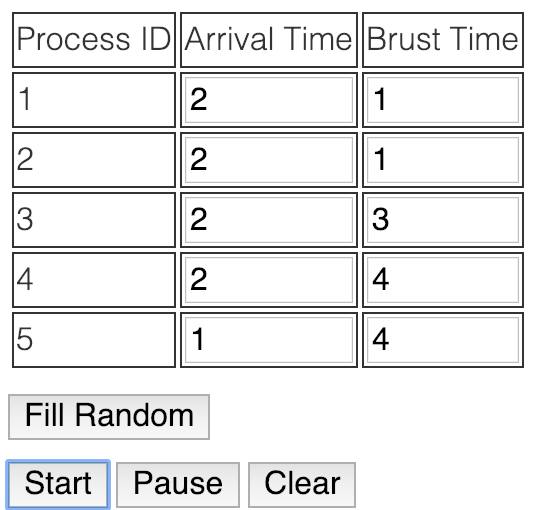
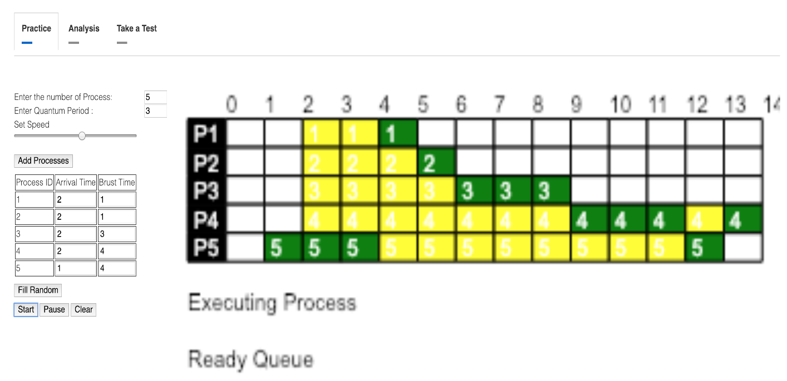

Round Robin Process Scheduling Algorithm
AIM:-
How Round Robin Algorithm Schedules the Processes.
THEORY:-
Round Robin Scheduling Policy
The operating system has many processes in memory and running simultaneously. Each process has its own burst time (execution time). There are other processes which are ready for execution and waiting for allocation of CPU. The processes waiting for allocation of CPU are kept in READY QUEUE in the sequence according to their arrival for execution. The time at which the process arrives is called ARRIVAL TIME. The CPU has to apply fair scheduling policy so that no process is favored and no process is deprived of execution.
Round Robin is the preemptive process scheduling algorithm policy which allocates CPU to the processes as per defined time quantum. Once the time quantum is over, the process goes in waiting state and is added at the end of the READY QUEUE. The process waits for the turn again.
The ready queue maintains the list of the processes and the sequence in which the CPU must be allocated. When the processes complete their execution, they go out of memory of operating system.
Keywords:
Arrival Time: Time when the process arrives for execution.
Completion Time: Time when process completes its execution.
Burst Time(Execution Time): Time required by the process once submitted to CPU.
Turn Around Time: Time Difference between completion time and arrival time.
{ Turn Around Time = Completion Time – Arrival Time }
Waiting Time: Time Difference between turn around time and burst time.
{ Waiting Time = Turn Around Time – Burst Time }
PROCEDURE:-
- The browser shows 3 tabs – Practice, Analysis, Take a Test
- The simulator shows two text boxes
- number of processes
- time quantum. The simulator also shows "Add processes" button.
- The user enters number of processes and time quantum and presses Add processes button.
- The simulator shows a table with process ID, Arrival time and Burst time. The simulator shows three buttons: Start, Pause, Reset.
- The user enters the arrival time and burst time. The user presses Start button.
- The simulator shows Gnatt chart of process execution along with READY QUEUE and COMPLETED PROCESS QUEUE.
It shows Currently running task. The simulation stops when all processes finish execution.

- The user has to press Analysis button. The simulator shows Analysis page and displays “Load Example” Button.

- The simulator displays the Gnatt chart. The simulator shows the formula for computing the average turn around time and average waiting time.
The simulator also shows the table with Process ID, waiting time and turnaround time for each process.
The simulator shows a button “Real Life Example of RR”
- The user presses the button “Real Life Example of RR”. The simulator shows traffic light pattern which works on the principle of Round Robin scheduling policy.
- The user presses “take a test” button.
- The Simulator shows a table with process ID, arrival time, burst time. And asks user to apply round robin algorithm.
The user is given two text boxes to enter calculated average turn around time and average waiting time.
- The simulator verifies the answer. The simulator pops up a message showing whether the answers are correct or not. In case of incorrect answers, the simulator shows the correct answers.